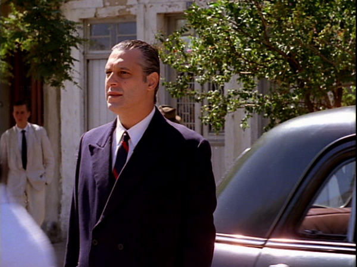

BARBOSA (Barbosa)
|
(35 mm, 13 min, cor, 1988) Treinta y ocho años después de la Copa del Mundo de 1950, un hombre vuelve en el tiempo para impedir el gol que derrotó a Brasil, destruyó sus sueños de infancia y acabó con la carrera del arquero Barbosa. |
 Foto por Sérgio Amon: Antônio Fagundes |
{kind=link}
ASSISTIR (PORTA CURTAS)
Dirección: Jorge Furtado y Ana Luiza Azevedo
Guión: Jorge Furtado, Ana Luiza Azevedo y Giba Assis Brasil
Dirección de Fotografía: Sérgio Amon
Dirección de Arte: Fiapo Barth
Música: Geraldo Flach
Dirección de Producción: Nora Goulart e Gisele Hiltl
Montaje: Giba Assis Brasil
Asistente de Dirección: Betty Perrenoud
Una Producción de la Casa de Cinema PoA
Elenco Principal
Antônio Fagundes (el viajero)
Pedro Santos (el cómplice)
Zé Vitor Castiel (el portero)
Ariel Nehring (el niño)
Abel Borba (el padre)
Prêmios
- 16º Festival de Cine Brasileño, Gramado, 1988:
Mejor Montaje de Corto Nacional, Mejor Guión de Corto Gaúcho y Mejor Dirección de Corto Gaucho - 21º Festival do Cine Brasileño, Brasilia, 1988:
Mejor Guión. - 11ª Jornada de Cine y vídeo de Maranhão, São Luis, 1988:
Mejor Argumento, Mejor Guión, Mejor Montaje y Destaque del Jurado - 10º Festival del Nuevo Cine Latinoamericano, La Habana, 1988:
Mejor Cortometraje de ficción - Exibido na mostra "Os 10 Melhores curtas brasileiros da década, no Cineclube Estação Botafogo, Rio de Janeiro, 1990.
Crítica
BARBOSA, apoyado en la 'iluminada' fotografía de Sérgio Amon, tiene un argumento fantástico. La dirección de arte de Fiapo Barth trae a Rio de Janeiro de 1950 para Porto Alegre de 1988 y convence. Un desafío vencido por el equipo, por los directores. Las ganas de cambiar el curso de la Historia están allí. ¿Brasil sería diferente con una victoria de la selección en la Copa del Mundo de 50?"
(Glênio Póvoas, DIÁRIO DO SUL, Porto Alegre, 26/06/88)
"Artes del movimiento y de los héroes, solitarias y rituales al mismo tiempo, cine y fútbol jamás se encontraron en una dimensión tan plena como en GARRINCHA ALEGRÍA DEL PUEBLO y en BARBOSA. (...) Capaz de transportar al espectador al corazón de aquella angustia, actualizar en emoción una derrota de hace 40 años, BARBOSA es tan obra de su tiempo cuanto GARRINCHA de Joaquim Pedro. BARBOSA nace de la quiebra de lo utópico (el narrador/ personaje dice 'aquella derrota era el prenuncio de que nada saldría bien en este país'). Hecho en un momento de Brasil en que ni al fútbol le iba bien (...), el corto riograndense sintomáticamente rescata un nudo de nuestra Historia que puede muy bien haber sido nuestro único momento en cuanto nación."
(David França Mendes, TABU, Rio de Janeiro, setembro/88)
BARBOSA ya nace clásico. A partir del libro ANATOMÍA DE UNA DERROTA, en que Paulo Perdigão se purgaba de la derrota brasileña en la Copa de 50, ellos desarrollaron una trama de erizarse. ¿Y si un adulto, torturado desde la infancia por el fracaso que atestiguó en el Maracanã, pudiera volver al pasado para impedir el fatídico gol de Ghiggia? El desenlace de esta catártica ilusión es como mínimo perturbador."
(Amir Labaki, FOLHA DE SÃO PAULO, 19/09/88)
La histórica escena en blanco y negro muestra el arquero brasileño Barbosa levantándose desolado después que los comentaristas deportivos consideraron un Golazo en Contra. Tragedia. (...) El momento fatal y sus consecuencias en la cabeza del arquero es el gran tema, transformado en un corto emocionante. (...) La sorprendente fotografía marca el compás del corazón, en blanco y negro y en colores. Un corto consistente y transparente. Una pequeña obra-prima."
(Rubens Araújo, JORNAL DE BRASÍLIA, 28/10/88)
"Um dos curtas brasileiros mais comunicativos e originais dos últimos tempos. É um filme onde tudo funciona à perfeição, do roteiro ao elenco. Sem esquecer da montagem impecável, da surpreendente utilização do vídeo e da integração entre ficção e documentário."
(Sérgio Bazi, CORREIO BRASILIENSE, Brasília, 28/10/88)
23/06/1988